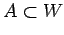
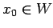
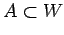
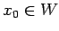
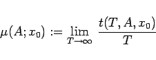
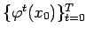
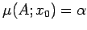
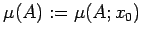
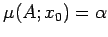
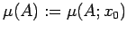

Inhalt Index DeskTop Bronstein

 Dynamische Systeme und Chaos Quantitative Beschreibung von Attraktoren Wahrscheinlichkeitsmaße auf Attraktoren Invariantes Maß
Dynamische Systeme und Chaos Quantitative Beschreibung von Attraktoren Wahrscheinlichkeitsmaße auf Attraktoren Invariantes Maß


Sei  ein Attraktor von
ein Attraktor von  in M mit Einzugsgebiet W. Für eine beliebige BOREL-Menge  und einen beliebigen Punkt  wird die Größe
in M mit Einzugsgebiet W. Für eine beliebige BOREL-Menge  und einen beliebigen Punkt  wird die Größe
|  | (17.30) |
gebildet, wobei t(T,A,x0) jeweils der Teil der Gesamtzeit T >0 ist, in dem der Orbitabschnitt  in der Menge A liegt. Wenn für  -fast alle x0 aus W sogar  ist, wird als natürliches Maß  gesetzt. Da fast alle Orbits mit Anfang für
-fast alle x0 aus W sogar  ist, wird als natürliches Maß  gesetzt. Da fast alle Orbits mit Anfang für  gegen
gegen  streben, ist
streben, ist  ein Wahrscheinlichkeitsmaß, das auf
ein Wahrscheinlichkeitsmaß, das auf  konzentriert ist.
konzentriert ist.